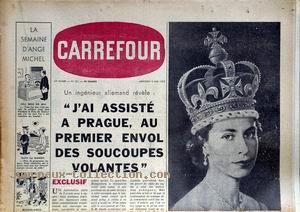

A la base de l'USAF de Goose (Labrador), les pilotes
et opérateur radar d'un intercepteur à réaction F-94 de l'USAF repèrent une lumière blanche, ainsi qu'un contrôleur
de la tour de contrôle. Il le prenne en chassse durant 30 mn, mais l'objet échappe à leur tentative d'interception
Cas Blue
Book n° 2555 non résolu.
Carrefour n° 451 du 6, titrant sur le témoignage d'un ingénieur allemand : "J'ai assisté, à Prague,
au 1er envol des soucoupes volantes

A Yuma (Arizona), le chimiste W. A. Webb observe un
objet oblong blanc dans le ciel. Lequel, au bout de 5 mn, se déplace, devient circulaire et plus petit. Webb met
alors ses lunettes Polaroïd et voit 3 anneaux noirs concentriques autour de l'objet. Il ne constate aucun effet
particulier sans les lunettes, ni pendant la première phase de l'observation.
Fritz Wermer, travaillant au Nevada au sein d'une équipe de scientifiques dont la mission consiste à estimer
scientifiquement les dégâts causés par un essai nucléaire rigoureusement confidentiel, est appelé par le
physicien dirigeant le groupe de recherche et reçoit l'ordre de monter à bord d'un vol spécial à destination de
Phoenix. De là, il est conduit dans le désert à bord d'un grand bus dont les fenêtres ont été rendues opaques,
en compagnie de 15 autres passagers. Tous reçoivent l'ordre de garder le silence au cours du voyage.
: A Brush Creek (Californie), 2 mineurs, John Q. Black (48 ans) et John Van Allen voient 1
objet argenté de 2,5 m de diamètre, 2 m d'épaisseur, avec un train d'atterrissage tripode atterrir sur une bande
de sable à 50 m de distance. Un occupant, décrit comme un nain aux larges épaules, portant des vêtements qui lui
couvraient la tête et le corps, est aussi observé. Ses bras et ses jambes sont recouverts d'un vêtement genre
tweed serré aux poignets et aux chevilles. Il remplit d'eau un seau brillant, le porte à quelqu'un à
l'intérieur. Puis il semble remarquer Black, saute dans l'engin qui part en émettant un sifflement Bowen, Humanoids 53.
À San Antonio (Texas) de nombreux civils non identifiés, dont un
certain Jacobson, observent durant 15 mn environ 9 lumières distinctes se déplacer sinueusement Cas Blue
Book n° 2577 non résolu.
Dans une petite ville du Wisconsin, un groupe de citoyens signale que durant plusieurs nuits, juste avant le lever
du soleil, un objet brillant, bien trop brillant pour être une étoile, apparaît à l'est et reste là,
allant lentement de plus en plus haut dans le ciel, même après que les étoiles aient disparu. Les témoins sont
si insistants et vocal que cela ne pouvait être rien d'ordinaire que J.
Allen Hynek fait un rapide voyage jusqu'à la ville. Il met en place un petit télescope ; suit l'objet en plein
jour et, à l'aide du Nautical Almanac, révéle à leur satisfaction que le mystérieux objet n'est rien
d'autre que la planète Venus peu après la conjonction
inférieure avec le soleil et donc ainsi à sa plus grande brillance Hynek, J. A.: "The UFO Gap", Playboy n° 12, vol. 14, décembre 1967, pp. 144, 146, 267-271.